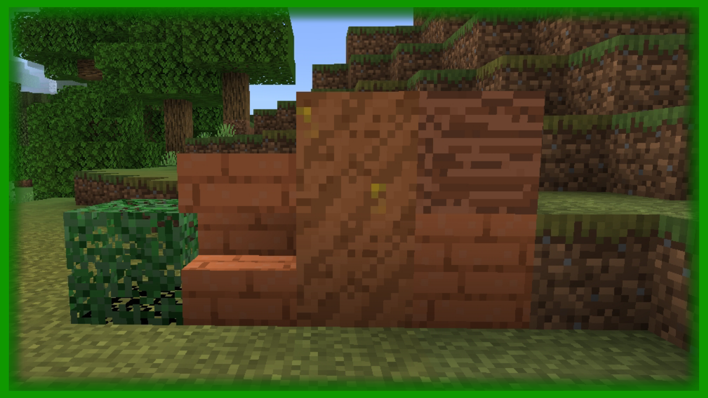
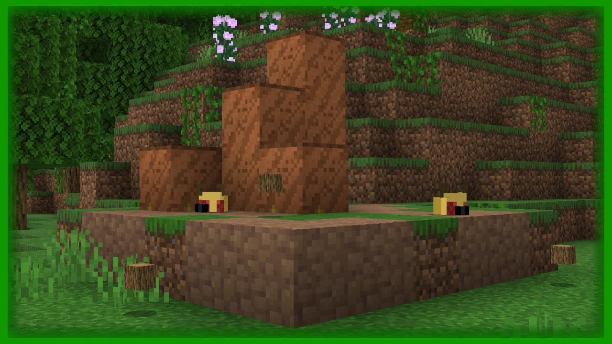
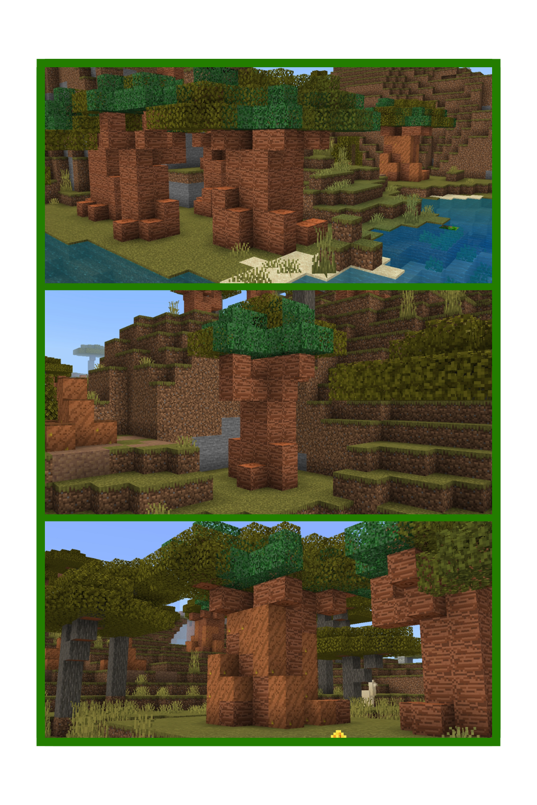
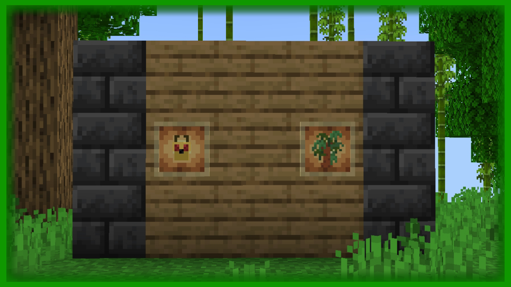

=| a Savanna Features |=




Nesse Addon possui novidades para a Savanna! Com uma nova Árvore de Baobá e os Cupinzeiros (Ninhos de Cupim), além do Mob Cupim que tem um sistema de transformação, caso ele interaja com a pedra e variantes sólidas , ele irá se transformar numa Traça caso o bloco que ele interagiu seja quebrado.
•Biomas:Nenhum;
•Blocos:Madeira de Baobá e Variantes, Lama Lisa, Lama Lisa com Cupim;
•Estruturas:Árvores de Baobá ,Ninho de Cupins;
•Itens:Muda de Baobá, Cupim;
•Aviso: Este addon pode não funcionar como deveria, teste ele em um mundo qualquer para ver se ele funciona em seu dispositivo/console/computador!
© 2022 - •| Add-Mods |• - Copyright